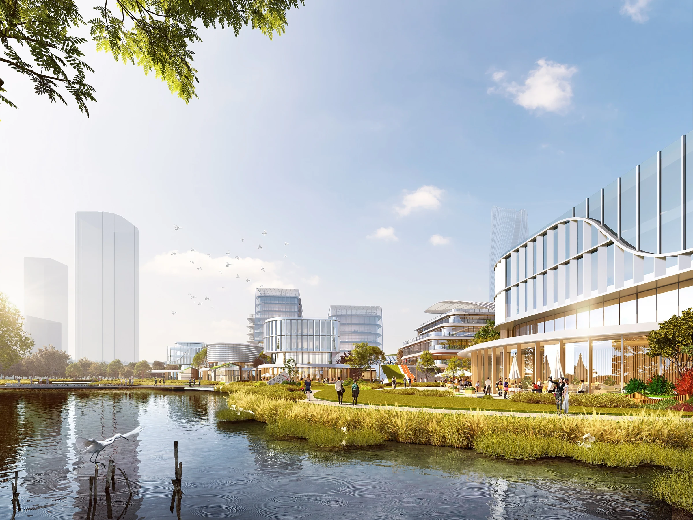

HEFEI NEW ENERGY INDUSTRIAL PARK
合肥高新区新能源产业园
涌川 · 奋进高新
安徽 · 合肥
产业园 · 片区更新 / 2023.09

- 地点
- 安徽 · 合肥
- 年份
- 2023.09
- 类型
- 产业园 · 片区更新
- 阶段
- 区业务会方案
- 参与
- 项目设计参与 · 团队协作
- 设计团队
- 深圳市建筑设计研究总院有限公司合肥分院
PROJECT / 项目
以高新区既有片区更新为背景，将生产研发建筑与公园景观共同组织。方案通过连续的曲线界面、组团布局与步行空间，回应场地中的交通、停车与公共环境问题。
01 / DESIGN建筑与公园共同成形
以连续的曲线界面组织建筑群，让景观成为园区空间的中心。
02 / DESIGN重组片区的到达体验
将人员活动、车辆到达与停车统筹考虑，以清楚的空间组织改善片区使用。
03 / DESIGN功能落入具体平面
以标准层、展厅及配套建筑平面承接园区总体空间构想。